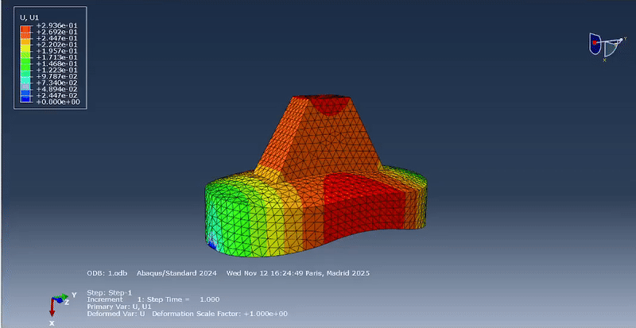
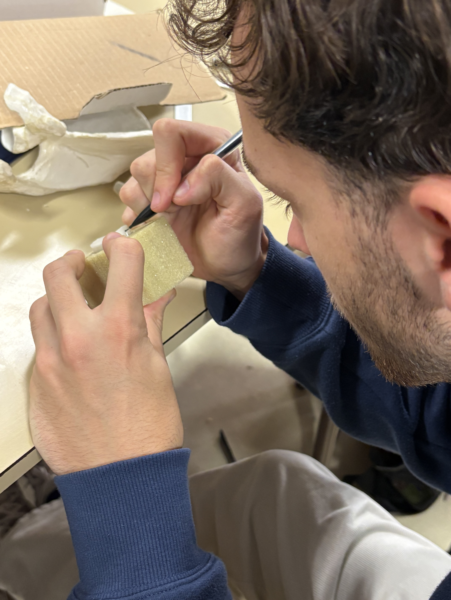
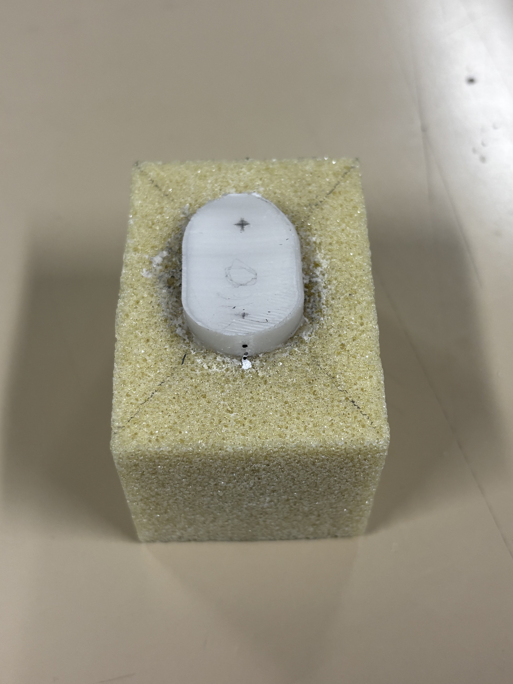
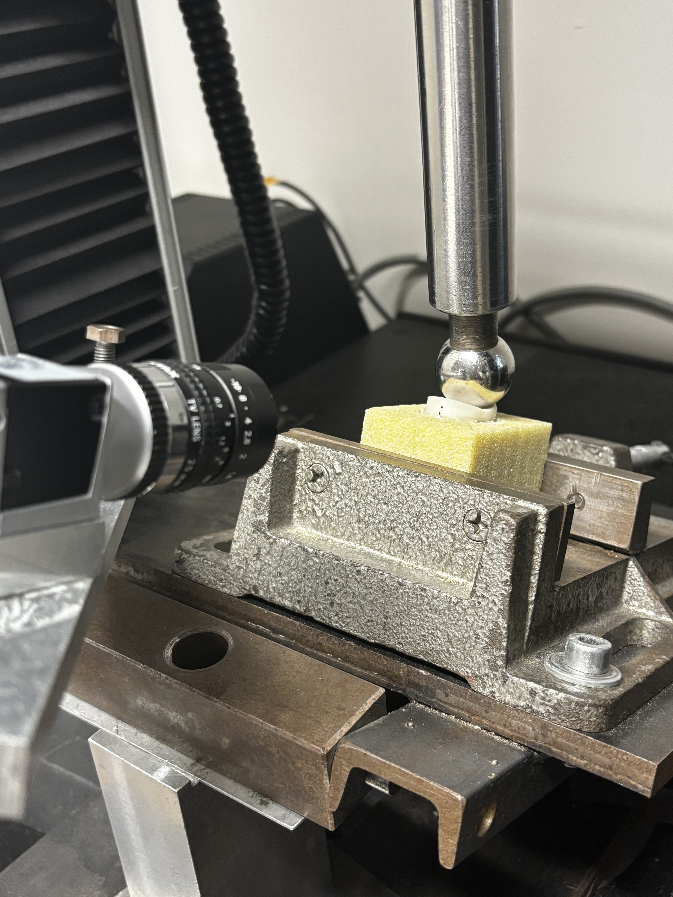
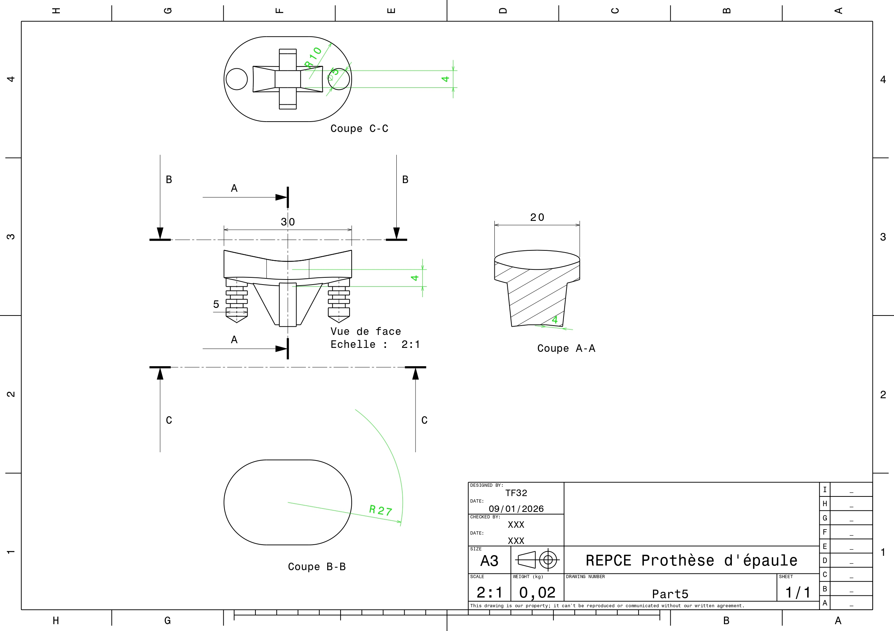

Shoulder Prosthesis – Design Optimization
Develop a finite element model to study glenoid implant loosening, identify its dominant mechanisms, and quantify the influence of design and fixation parameters. The objective is to build a generic and adaptable simulation framework applicable to various implant designs and to support the development of an optimized glenoid implant with reduced loosening risk.
-
 Python
Python
-
 ABAQUS
ABAQUS
-
 Catia
Catia
State of the Art – Glenoid Components
Before designing and modeling a new glenoid implant, we conducted an in-depth literature review on:
- Biomechanical testing of shoulder prostheses and glenoid components
- Finite element models of implanted scapulae and glenoid fixation systems
- Failure mechanisms, micromotion, and cement fatigue in glenoid implants
The report below summarizes key experimental setups, modeling strategies, and design guidelines that inform our own design and finite element study.
Finite Element Modeling
Based on the state-of-the-art, a finite element model of a shoulder glenoid component is being developed to analyse stress distributions, micromotions at the bone–implant interface, and the influence of design parameters.
During the FE analysis, we focused on:
- Reconstructing the scapula and implant geometry
- Defining realistic boundary conditions and load cases
- Comparing different fixation concepts using numerical simulations
The animation shows one of our current finite element configurations under physiological loading.




Experimental Work – Mechanical Testing
Experimental testing was performed to identify the loading conditions and force transmission mechanisms responsible for loosening in cemented glenoid implants.
- Glenoid implant cemented with PMMA into a polyurethane foam block simulating cancellous bone
- Mechanical loading on an Instron testing machine with a physiological implant orientation (~22°)
- Optical displacement measurement using a calibrated CCD camera to detect implant micromotion
- Quasi-static, cyclic fatigue, and destructive loading to identify loosening mechanisms
The images illustrate the main steps of the experimental protocol.
Design of the Glenoid Implant Concept
Building on the clinical context and the state-of-the-art, a new glenoid implant concept was defined to address the main mechanisms responsible for loosening, in particular eccentric loading and rocking-horse effects.
The design phase focused on:
- Translating biomechanical constraints into a clear design specification
- Defining implant geometry, anchoring strategy, and overall dimensions
- Integrating lessons from experimental testing and finite element validation
The proposed geometry aims to improve mechanical stability while remaining compatible with surgical constraints and cemented fixation.

Ongoing work focuses on the design and development of a new glenoid prosthesis, building directly on the experimental results and finite element analyses.